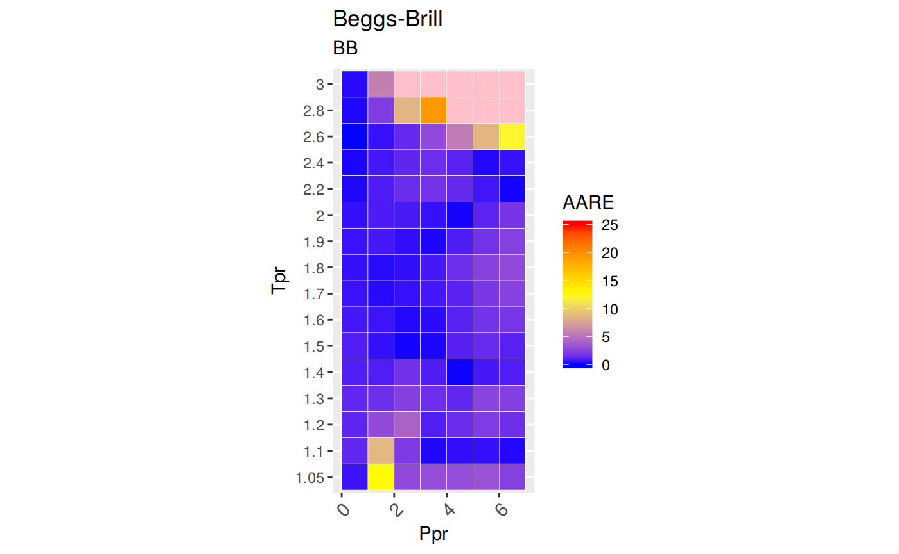

How do we find the limits of accuracy in the BB correlation
Get z at selected Ppr and Tpr
# get a z value using DPR correlation
library(zFactor)
z.BeggsBrill(pres.pr = 1.5, temp.pr = 2.0)
# HY = 0.9580002[1] 0.962902From the Standing-Katz chart we obtain a digitized point at the same Ppr and Tpr:
# get a z value from the SK chart at the same Ppr and Tpr
library(zFactor)
tpr_vec <- c(2.0)
getStandingKatzMatrix(tpr_vector = tpr_vec,
pprRange = "lp")[1, "1.5"] 1.5
0.956 It looks pretty good.
Get z at selected Ppr and Tpr
[1] 0.4631501From the Standing-Katz chart we obtain a digitized point:
library(zFactor)
tpr_vec <- c(1.1)
getStandingKatzMatrix(tpr_vector = tpr_vec,
pprRange = "lp")[1, "1.5"] 1.5
0.426 At lower
Tprthere is some error. We see a difference between the values of z from the `BB calculation and the value read from the Standing-Katz chart.
Get values of z for several Ppr and Tpr
# test HY with 1st-derivative using the values from paper
ppr <- c(0.5, 1.5, 2.5, 3.5, 4.5, 5.5, 6.5)
tpr <- c(1.3, 1.5, 1.7, 2)
corr <- z.BeggsBrill(pres.pr = ppr, temp.pr = tpr)
print(corr)
# From Hall-Yarborough
# 0.5 1.5 2.5 3.5 4.5 5.5 6.5
# 1.3 0.9176300 0.7534433 0.6399020 0.6323003 0.6881127 0.7651710 0.8493794
# 1.5 0.9496855 0.8581232 0.7924067 0.7687902 0.7868071 0.8316848 0.8906351
# 1.7 0.9682547 0.9134862 0.8756412 0.8605668 0.8694525 0.8978885 0.9396353
# 2 0.9838234 0.9580002 0.9426939 0.9396286 0.9490995 0.9697839 0.9994317
# From Dranchuk-AbouKassem
# 0.5 1.5 2.5 3.5 4.5 5.5 6.5
# 1.3 0.9203019 0.7543694 0.6377871 0.6339357 0.6898314 0.7663247 0.8499523
# 1.5 0.9509373 0.8593144 0.7929993 0.7710525 0.7896224 0.8331893 0.8904317
# 1.7 0.9681353 0.9128087 0.8753784 0.8619509 0.8721085 0.9003962 0.9409634
# 2 0.9824731 0.9551087 0.9400752 0.9385273 0.9497137 0.9715388 1.0015560 0.5 1.5 2.5 3.5 4.5 5.5 6.5
1.3 0.9266436 0.7675523 0.6526911 0.6234648 0.6921991 0.7779095 0.8630653
1.5 0.9555248 0.8618306 0.7945385 0.7691830 0.7828753 0.8248905 0.8837555
1.7 0.9719193 0.9159219 0.8728791 0.8521620 0.8556641 0.8800665 0.9198223
2 0.9853337 0.9629020 0.9471826 0.9404180 0.9443010 0.9593080 0.9848256With the same ppr and tpr vectors, we do the same for the Standing-Katz chart:
0.5 1.5 2.5 3.5 4.5 5.5 6.5
1.30 0.916 0.756 0.638 0.633 0.684 0.759 0.844
1.50 0.948 0.859 0.794 0.770 0.790 0.836 0.892
1.70 0.968 0.914 0.876 0.857 0.864 0.897 0.942
2.00 0.982 0.956 0.941 0.937 0.945 0.969 1.003Subtract the two matrices and find the difference:
err <- round((sk - corr) / sk * 100, 2)
err
# DAK
# 0.5 1.5 2.5 3.5 4.5 5.5 6.5
# 1.30 -0.47 0.22 0.03 -0.15 -0.85 -0.97 -0.71
# 1.50 -0.31 -0.04 0.13 -0.14 0.05 0.34 0.18
# 1.70 -0.01 0.13 0.07 -0.58 -0.94 -0.38 0.11
# 2.00 -0.05 0.09 0.10 -0.16 -0.50 -0.26 0.14 0.5 1.5 2.5 3.5 4.5 5.5 6.5
1.30 -1.16 -1.53 -2.30 1.51 -1.20 -2.49 -2.26
1.50 -0.79 -0.33 -0.07 0.11 0.90 1.33 0.92
1.70 -0.40 -0.21 0.36 0.56 0.96 1.89 2.35
2.00 -0.34 -0.72 -0.66 -0.36 0.07 1.00 1.81
Error by Ppr and by PPr
0.5 1.5 2.5 3.5 4.5 5.5 6.5
-2.69 -2.79 -2.67 1.82 0.73 1.73 2.82 1.30 1.50 1.70 2.00
-9.43 2.07 5.51 0.80
Analyze the error for smaller values of Tpr
library(zFactor)
tpr2 <- c(1.05, 1.1)
ppr2 <- c(0.5, 1.5, 2.5, 3.5, 4.5, 5.5)
sk2 <- getStandingKatzMatrix(ppr_vector = ppr2, tpr_vector = tpr2, pprRange = "lp")
sk2 0.5 1.5 2.5 3.5 4.5 5.5
1.05 0.829 0.253 0.343 0.471 0.598 0.727
1.10 0.854 0.426 0.393 0.500 0.615 0.729We do the same with the BB correlation:
# calculate z values at lower values of Tpr
library(zFactor)
corr2 <- z.BeggsBrill(pres.pr = ppr2, temp.pr = tpr2)
print(corr2) 0.5 1.5 2.5 3.5 4.5 5.5
1.05 0.8325491 0.2851494 0.3333796 0.4569204 0.5802310 0.7033638
1.1 0.8639321 0.4631501 0.3848774 0.4993213 0.6131885 0.7266084Subtract the matrices and calculate the error in percentage:
err2 <- round((sk2 - corr2) / sk2 * 100, 2)
err2
# DAK
# 0.5 1.5 2.5 3.5 4.5 5.5
# 1.05 -0.13 -12.15 -12.78 -7.49 -4.34 -1.68
# 1.10 -0.36 -4.79 -4.97 -3.56 -2.14 -1.21 0.5 1.5 2.5 3.5 4.5 5.5
1.05 -0.43 -12.71 2.80 2.99 2.97 3.25
1.10 -1.16 -8.72 2.07 0.14 0.29 0.33Transposing the matrix with Tpr as columns and Ppr as rows:
1.05 1.10
0.5 -0.43 -1.16
1.5 -12.71 -8.72
2.5 2.80 2.07
3.5 2.99 0.14
4.5 2.97 0.29
5.5 3.25 0.33A statistical summary by Tpr curve:
1.05 1.10
Min. :-12.7100 Min. :-8.720
1st Qu.: 0.3775 1st Qu.:-0.835
Median : 2.8850 Median : 0.215
Mean : -0.1883 Mean :-1.175
3rd Qu.: 2.9850 3rd Qu.: 0.320
Max. : 3.2500 Max. : 2.070 We can see that the errors in z with DAK are less than HY with a Min. :-12.7100 % and Max. : 3.2500 % for Tpr = 1.05, and a Min. :-8.720 %% and Max. : 2.070 %% for Tpr = 1.10.
Prepare to plot SK chart vs BB correlation
library(zFactor)
library(tibble)
tpr2 <- c(1.05, 1.1, 1.2, 1.3)
ppr2 <- c(0.5, 1.0, 1.5, 2, 2.5, 3.0, 3.5, 4.0, 4.5, 5.0, 5.5, 6.0, 6.5)
sk_corr_2 <- createTidyFromMatrix(ppr2, tpr2, correlation = "BB")
as_tibble(sk_corr_2)# A tibble: 52 x 5
Tpr Ppr z.chart z.calc dif
<chr> <dbl> <dbl> <dbl> <dbl>
1 1.05 0.5 0.829 0.833 -0.00355
2 1.1 0.5 0.854 0.864 -0.00993
3 1.2 0.5 0.893 0.903 -0.00965
4 1.3 0.5 0.916 0.927 -0.0106
5 1.05 1 0.589 0.586 0.00330
6 1.1 1 0.669 0.687 -0.0184
7 1.2 1 0.779 0.790 -0.0109
8 1.3 1 0.835 0.845 -0.00951
9 1.05 1.5 0.253 0.285 -0.0321
10 1.1 1.5 0.426 0.463 -0.0372
# … with 42 more rowslibrary(ggplot2)
p <- ggplot(sk_corr_2, aes(x=Ppr, y=z.calc, group=Tpr, color=Tpr)) +
geom_line() +
geom_point() +
geom_errorbar(aes(ymin=z.calc-dif, ymax=z.calc+dif), width=.4,
position=position_dodge(0.05))
print(p)
Analysis at the lowest Tpr
Extract only values at Tpr = 1.05.
Tpr Ppr z.chart z.calc dif
1 1.05 0.5 0.829 0.8325491 -0.003549064
5 1.05 1.0 0.589 0.5857006 0.003299370
9 1.05 1.5 0.253 0.2851494 -0.032149397
13 1.05 2.0 0.280 0.2715884 0.008411630
17 1.05 2.5 0.343 0.3333796 0.009620404
21 1.05 3.0 0.407 0.3951833 0.011816743
25 1.05 3.5 0.471 0.4569204 0.014079649
29 1.05 4.0 0.534 0.5186005 0.015399484
33 1.05 4.5 0.598 0.5802310 0.017769048
37 1.05 5.0 0.663 0.6418172 0.021182758
41 1.05 5.5 0.727 0.7033638 0.023636157
45 1.05 6.0 0.786 0.7648744 0.021125603
49 1.05 6.5 0.846 0.8263519 0.019648067p <- ggplot(sk_corr_3, aes(x=Ppr, y=z.calc, group=Tpr, color=Tpr)) +
geom_line(size = 1) +
geom_point(shape = 21, fill = "white", size = 3) +
geom_errorbar(aes(ymin=z.calc-dif, ymax=z.calc+dif), width=0.2, size = 0.,
position=position_dodge(0.05), color = "black")
print(p)
summary(sk_corr_3)
# dif DAK
# Min. :-0.048404
# 1st Qu.:-0.035300
# Median :-0.025978
# Mean :-0.023178
# 3rd Qu.:-0.009960
# Max. : 0.002325 Tpr Ppr z.chart z.calc
Length:13 Min. :0.5 Min. :0.2530 Min. :0.2716
Class :character 1st Qu.:2.0 1st Qu.:0.4070 1st Qu.:0.3952
Mode :character Median :3.5 Median :0.5890 Median :0.5802
Mean :3.5 Mean :0.5635 Mean :0.5535
3rd Qu.:5.0 3rd Qu.:0.7270 3rd Qu.:0.7034
Max. :6.5 Max. :0.8460 Max. :0.8325
dif
Min. :-0.032149
1st Qu.: 0.008412
Median : 0.014080
Mean : 0.010022
3rd Qu.: 0.019648
Max. : 0.023636 With this information there is no much we can say about Beggs-Brill.
Analyzing performance of the BB correlation for all the Tpr curves
library(ggplot2)
library(tibble)
# get all `lp` Tpr curves
tpr_all <- getStandingKatzTpr(pprRange = "lp")
ppr <- c(0.5, 1.5, 2.5, 3.5, 4.5, 5.5, 6.5)
sk_corr_all <- createTidyFromMatrix(ppr, tpr_all, correlation = "BB")
as_tibble(sk_corr_all)
p <- ggplot(sk_corr_all, aes(x=Ppr, y=z.calc, group=Tpr, color=Tpr)) +
geom_line() +
geom_point() +
geom_errorbar(aes(ymin=z.calc-dif, ymax=z.calc+dif), width=.4,
position=position_dodge(0.05))
print(p)
# A tibble: 112 x 5
Tpr Ppr z.chart z.calc dif
<chr> <dbl> <dbl> <dbl> <dbl>
1 1.05 0.5 0.829 0.833 -0.00355
2 1.1 0.5 0.854 0.864 -0.00993
3 1.2 0.5 0.893 0.903 -0.00965
4 1.3 0.5 0.916 0.927 -0.0106
5 1.4 0.5 0.936 0.943 -0.00730
6 1.5 0.5 0.948 0.956 -0.00752
7 1.6 0.5 0.959 0.965 -0.00578
8 1.7 0.5 0.968 0.972 -0.00392
9 1.8 0.5 0.974 0.977 -0.00349
10 1.9 0.5 0.978 0.982 -0.00386
# … with 102 more rows# MSE: Mean Squared Error
# RMSE: Root Mean Sqyared Error
# RSS: residual sum of square
# ARE: Average Relative Error, %
# AARE: Average Absolute Relative Error, %
library(dplyr)
grouped <- group_by(sk_corr_all, Tpr, Ppr)
smry_tpr_ppr <- summarise(grouped,
RMSE= sqrt(mean((z.chart-z.calc)^2)),
MSE = sum((z.calc - z.chart)^2) / n(),
RSS = sum((z.calc - z.chart)^2),
ARE = sum((z.calc - z.chart) / z.chart) * 100 / n(),
AARE = sum( abs((z.calc - z.chart) / z.chart)) * 100 / n()
)
ggplot(smry_tpr_ppr, aes(Ppr, Tpr)) +
geom_tile(data=smry_tpr_ppr, aes(fill=AARE), color="white") +
scale_fill_gradient2(low="blue", high="red", mid="yellow", na.value = "pink",
midpoint=12.5, limit=c(0, 25), name="AARE") +
theme(axis.text.x = element_text(angle=45, vjust=1, size=11, hjust=1)) +
coord_equal() +
ggtitle("Beggs-Brill", subtitle = "BB")
The errors with Beggs and Brill are just so big and some
zvalues are even negative. We have to be very careful when using this Beggs and Brill correlation.
Plotting the Tpr and Ppr values that show more error
library(dplyr)
sk_corr_all %>%
filter(Tpr %in% c("1.05", "1.1")) %>%
ggplot(aes(x = z.chart, y=z.calc, group = Tpr, color = Tpr)) +
geom_point(size = 3) +
geom_line(aes(x = z.chart, y = z.chart), color = "black") +
facet_grid(. ~ Tpr) +
geom_errorbar(aes(ymin=z.calc-abs(dif), ymax=z.calc+abs(dif)),
position=position_dodge(0.5))library(dplyr)
sk_corr_all %>%
filter(Tpr %in% c("2.6", "2.8")) %>%
ggplot(aes(x = z.chart, y=z.calc, group = Tpr, color = Tpr)) +
geom_point(size = 3) +
geom_line(aes(x = z.chart, y = z.chart), color = "black") +
facet_grid(. ~ Tpr) +
geom_errorbar(aes(ymin=z.calc-abs(dif), ymax=z.calc+abs(dif)),
position=position_dodge(0.5))Let’s see which observations (rows) have z values that are negative:
Tpr Ppr z.chart z.calc dif
80 3 4.5 1.041 -0.889701 1.930701
96 3 5.5 1.056 -2.517895 3.573895
112 3 6.5 1.075 -4.882513 5.957513Or see which rows contain z values that show an error greater than 15%:
Tpr Ppr z.chart z.calc dif
48 3 2.5 1.018 0.7082371 0.3097629
63 2.8 3.5 1.016 0.8188474 0.1971526
64 3 3.5 1.029 0.1399229 0.8890771
79 2.8 4.5 1.030 0.6645377 0.3654623
80 3 4.5 1.041 -0.8897010 1.9307010
95 2.8 5.5 1.049 0.4548462 0.5941538
96 3 5.5 1.056 -2.5178952 3.5738952
111 2.8 6.5 1.069 0.1860147 0.8829853
112 3 6.5 1.075 -4.8825128 5.9575128You can also see that there are three rows with error greater than 100% !
Looking numerically at the errors in BB vs SK chart
# get all `lp` Tpr curves
tpr <- getStandingKatzTpr(pprRange = "lp")
ppr <- c(0.5, 1.5, 2.5, 3.5, 4.5, 5.5, 6.5)
# calculate HY for the given Tpr
all_corr <- z.BeggsBrill(pres.pr = ppr, temp.pr = tpr)
cat("Calculated from the correlation \n")
print(all_corr)
cat("\nStanding-Katz chart\n")
all_sk <- getStandingKatzMatrix(ppr_vector = ppr, tpr_vector = tpr)
all_sk
# find the error
cat("\n Errors in percentage \n")
all_err <- round((all_sk - all_corr) / all_sk * 100, 2) # in percentage
all_err
cat("\n Errors in Ppr\n")
summary(all_err)
# for the transposed matrix
cat("\n Errors for the transposed matrix: Tpr \n")
summary(t(all_err))Calculated from the correlation
0.5 1.5 2.5 3.5 4.5 5.5
1.05 0.8325491 0.2851494 0.3333796 0.4569204 0.5802310 0.7033638
1.1 0.8639321 0.4631501 0.3848774 0.4993213 0.6131885 0.7266084
1.2 0.9026461 0.6758659 0.4977865 0.5605500 0.6589953 0.7567099
1.3 0.9266436 0.7675523 0.6526911 0.6234648 0.6921991 0.7779095
1.4 0.9432988 0.8224273 0.7388187 0.7103492 0.7343367 0.7966791
1.5 0.9555248 0.8618306 0.7945385 0.7691830 0.7828753 0.8248905
1.6 0.9647818 0.8920527 0.8376331 0.8139976 0.8214333 0.8532880
1.7 0.9719193 0.9159219 0.8728791 0.8521620 0.8556641 0.8800665
1.8 0.9774854 0.9350585 0.9022222 0.8855750 0.8874829 0.9067399
1.9 0.9818623 0.9504907 0.9267646 0.9149047 0.9171073 0.9333359
2 0.9853337 0.9629020 0.9471826 0.9404180 0.9443010 0.9593080
2.2 0.9904020 0.9803535 0.9768810 0.9795480 0.9887829 1.0049837
2.4 0.9940266 0.9894204 0.9909094 0.9974289 1.0086828 1.0246183
2.6 0.9971532 0.9902007 0.9817596 0.9719460 0.9608415 0.9485126
2.8 1.0004100 0.9802574 0.9222416 0.8188474 0.6645377 0.4548462
3 1.0040392 0.9514557 0.7082371 0.1399229 -0.8897010 -2.5178952
6.5
1.05 0.8263519
1.1 0.8396647
1.2 0.8538299
1.3 0.8630653
1.4 0.8717561
1.5 0.8837555
1.6 0.9011787
1.7 0.9198223
1.8 0.9400764
1.9 0.9619430
2 0.9848256
2.2 1.0282971
2.4 1.0452638
2.6 0.9350177
2.8 0.1860147
3 -4.8825128
Standing-Katz chart
0.5 1.5 2.5 3.5 4.5 5.5 6.5
1.05 0.829 0.253 0.343 0.471 0.598 0.727 0.846
1.10 0.854 0.426 0.393 0.500 0.615 0.729 0.841
1.20 0.893 0.657 0.519 0.565 0.650 0.741 0.841
1.30 0.916 0.756 0.638 0.633 0.684 0.759 0.844
1.40 0.936 0.816 0.727 0.705 0.734 0.792 0.865
1.50 0.948 0.859 0.794 0.770 0.790 0.836 0.892
1.60 0.959 0.888 0.839 0.816 0.829 0.868 0.918
1.70 0.968 0.914 0.876 0.857 0.864 0.897 0.942
1.80 0.974 0.933 0.905 0.891 0.901 0.929 0.967
1.90 0.978 0.945 0.924 0.916 0.924 0.949 0.985
2.00 0.982 0.956 0.941 0.937 0.945 0.969 1.003
2.20 0.989 0.973 0.963 0.963 0.976 1.000 1.029
2.40 0.993 0.984 0.980 0.983 0.999 1.023 1.049
2.60 0.997 0.994 0.994 1.000 1.016 1.038 1.062
2.80 0.999 1.002 1.008 1.016 1.030 1.049 1.069
3.00 1.002 1.009 1.018 1.029 1.041 1.056 1.075
Errors in percentage
0.5 1.5 2.5 3.5 4.5 5.5 6.5
1.05 -0.43 -12.71 2.80 2.99 2.97 3.25 2.32
1.10 -1.16 -8.72 2.07 0.14 0.29 0.33 0.16
1.20 -1.08 -2.87 4.09 0.79 -1.38 -2.12 -1.53
1.30 -1.16 -1.53 -2.30 1.51 -1.20 -2.49 -2.26
1.40 -0.78 -0.79 -1.63 -0.76 -0.05 -0.59 -0.78
1.50 -0.79 -0.33 -0.07 0.11 0.90 1.33 0.92
1.60 -0.60 -0.46 0.16 0.25 0.91 1.69 1.83
1.70 -0.40 -0.21 0.36 0.56 0.96 1.89 2.35
1.80 -0.36 -0.22 0.31 0.61 1.50 2.40 2.78
1.90 -0.39 -0.58 -0.30 0.12 0.75 1.65 2.34
2.00 -0.34 -0.72 -0.66 -0.36 0.07 1.00 1.81
2.20 -0.14 -0.76 -1.44 -1.72 -1.31 -0.50 0.07
2.40 -0.10 -0.55 -1.11 -1.47 -0.97 -0.16 0.36
2.60 -0.02 0.38 1.23 2.81 5.43 8.62 11.96
2.80 -0.14 2.17 8.51 19.40 35.48 56.64 82.60
3.00 -0.20 5.70 30.43 86.40 185.47 338.44 554.19
Errors in Ppr
0.5 1.5 2.5 3.5
Min. :-1.1600 Min. :-12.7100 Min. :-2.3000 Min. :-1.7200
1st Qu.:-0.7825 1st Qu.: -0.9750 1st Qu.:-0.7725 1st Qu.:-0.0075
Median :-0.3950 Median : -0.5650 Median : 0.2350 Median : 0.4050
Mean :-0.5056 Mean : -1.3875 Mean : 2.6531 Mean : 6.9612
3rd Qu.:-0.1850 3rd Qu.: -0.2175 3rd Qu.: 2.2525 3rd Qu.: 1.8350
Max. :-0.0200 Max. : 5.7000 Max. :30.4300 Max. :86.4000
4.5 5.5 6.5
Min. : -1.380 Min. : -2.490 Min. : -2.2600
1st Qu.: -0.280 1st Qu.: -0.245 1st Qu.: 0.1375
Median : 0.825 Median : 1.490 Median : 1.8200
Mean : 14.364 Mean : 25.711 Mean : 41.1950
3rd Qu.: 1.867 3rd Qu.: 2.612 3rd Qu.: 2.4575
Max. :185.470 Max. :338.440 Max. :554.1900
Errors for the transposed matrix: Tpr
1.05 1.10 1.20 1.30
Min. :-12.710 Min. :-8.7200 Min. :-2.8700 Min. :-2.490
1st Qu.: 0.945 1st Qu.:-0.5100 1st Qu.:-1.8250 1st Qu.:-2.280
Median : 2.800 Median : 0.1600 Median :-1.3800 Median :-1.530
Mean : 0.170 Mean :-0.9843 Mean :-0.5857 Mean :-1.347
3rd Qu.: 2.980 3rd Qu.: 0.3100 3rd Qu.:-0.1450 3rd Qu.:-1.180
Max. : 3.250 Max. : 2.0700 Max. : 4.0900 Max. : 1.510
1.40 1.50 1.60 1.70
Min. :-1.6300 Min. :-0.7900 Min. :-0.60 Min. :-0.4000
1st Qu.:-0.7850 1st Qu.:-0.2000 1st Qu.:-0.15 1st Qu.: 0.0750
Median :-0.7800 Median : 0.1100 Median : 0.25 Median : 0.5600
Mean :-0.7686 Mean : 0.2957 Mean : 0.54 Mean : 0.7871
3rd Qu.:-0.6750 3rd Qu.: 0.9100 3rd Qu.: 1.30 3rd Qu.: 1.4250
Max. :-0.0500 Max. : 1.3300 Max. : 1.83 Max. : 2.3500
1.80 1.90 2.00 2.20
Min. :-0.360 Min. :-0.5800 Min. :-0.7200 Min. :-1.7200
1st Qu.: 0.045 1st Qu.:-0.3450 1st Qu.:-0.5100 1st Qu.:-1.3750
Median : 0.610 Median : 0.1200 Median :-0.3400 Median :-0.7600
Mean : 1.003 Mean : 0.5129 Mean : 0.1143 Mean :-0.8286
3rd Qu.: 1.950 3rd Qu.: 1.2000 3rd Qu.: 0.5350 3rd Qu.:-0.3200
Max. : 2.780 Max. : 2.3400 Max. : 1.8100 Max. : 0.0700
2.40 2.60 2.80 3.00
Min. :-1.4700 Min. :-0.020 Min. :-0.14 Min. : -0.20
1st Qu.:-1.0400 1st Qu.: 0.805 1st Qu.: 5.34 1st Qu.: 18.07
Median :-0.5500 Median : 2.810 Median :19.40 Median : 86.40
Mean :-0.5714 Mean : 4.344 Mean :29.24 Mean :171.49
3rd Qu.:-0.1300 3rd Qu.: 7.025 3rd Qu.:46.06 3rd Qu.:261.95
Max. : 0.3600 Max. :11.960 Max. :82.60 Max. :554.19